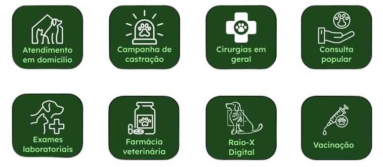

Quem Somos?
A PetCare é uma empresa dedicada ao bem-estar de animais de estimação, oferecendo
uma variedade de serviços que incluem cuidados veterinários, banho e tosa, adestramento e
hospedagem.
A organização está situada em São Paulo e outras regiões do Brasil, atendendo tanto animais de
pequeno quanto de grande porte, e tem como missão proporcionar um ambiente seguro e acolhedor para
os pets e seus tutores.
Consulte nossos preços e contate-nos agora para uma consultoria!

Cuidados para dar uma vida longa ao seu pet
Com uma equipe de profissionais apaixonados por pets, a PetCare se destaca por seu compromisso com a saúde e a felicidade dos animais, garantindo que cada cliente receba um atendimento personalizado e de alta qualidade. Para acompanhar o crescimento da demanda por seus serviços, a PetCare reconhece a importância de um sistema robusto que integre áreas críticas como finanças, administração e controle de estoque, permitindo uma gestão mais eficiente e contribuindo para a satisfação dos clientes e a excelência no atendimento.
- Consultas e exames de rotinas
- Vacinação e imunização
- Cirurgias e procedimentos
- Tratamentos e controles de doenças
- Odontologia veterinária
- Atendimento de emergência 24 horas
- Nutrição e aconselhamento alimentar personalizado
Venha conferir nosso Petshop e Farmácia
Na PetCare, cuidar da saúde do seu pet é nossa prioridade. Por isso, contamos com uma farmácia veterinária completa, oferecendo medicamentos, suplementos, antipulgas, vermífugos e muito mais, sempre com produtos de qualidade e das melhores marcas do mercado. Nosso compromisso é garantir que você encontre tudo o que seu pet precisa em um só lugar, com atendimento atencioso, orientação especializada e entrega rápida para facilitar o seu dia a dia. Na PetCare, saúde, carinho e confiança andam sempre juntos.

Ficou alguma dúvida?
Quais serviços são oferecidos pela clínica PetLife?
A PetCare oferece uma farmácia veterinária completa com medicamentos e suplementos para pets e dispõe de produtos de higiene, cuidados diários e alimentação especializada. Conta com orientação profissional para a escolha dos melhores itens para cada necessidade realiza vendas online com entrega rápida e segura e tem como missão promover saúde, bem-estar e praticidade para você e seu pet.
Quais espécies de animais a clínica atende?
A PetCare oferece cuidados e produtos especializados para diversas espécies de animais, incluindo cães, gatos, pássaros, roedores como hamsters e porquinhos-da-índia, peixes ornamentais e répteis como tartarugas e lagartos. Nossa linha é pensada para atender às necessidades específicas de cada pet, com segurança, qualidade e carinho em cada detalhe.
A clínica possui serviço de emergência?
A PetCare possui sim um serviço de emergência para atender seu pet nos momentos mais delicados. Com profissionais capacitados e atendimento rápido, estamos preparados para oferecer suporte em casos de urgência, garantindo cuidado, atenção e os primeiros socorros necessários. Porque quando se trata da saúde do seu melhor amigo, cada minuto faz a diferença.
A clínica oferece serviços de banho e tosa?
Na PetCare, o serviço de banho e tosa é realizado com todo o carinho e profissionalismo que seu pet merece. Utilizamos produtos de alta qualidade, equipamentos seguros e técnicas adequadas para cada tipo de pelagem e porte. Além da higiene, priorizamos o bem-estar e o conforto dos animais, tornando esse momento tranquilo e agradável. Seu pet limpo, saudável e ainda mais feliz!